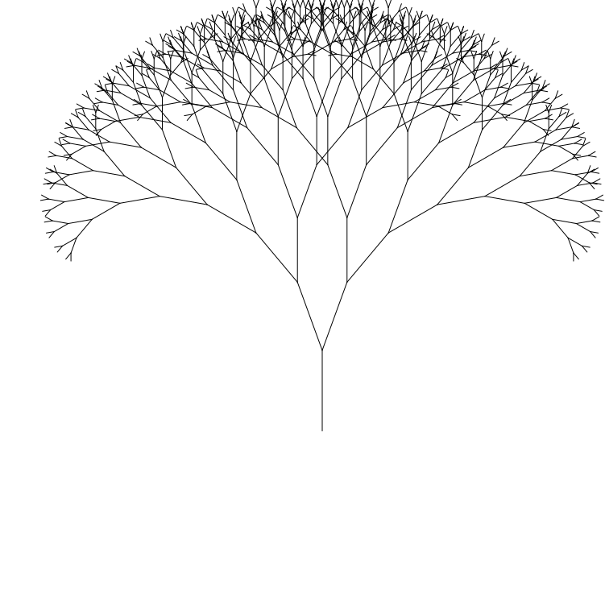

Homework 13
Last updated: Thu, 5 Dec 2024 14:47:00 -0500
Out: Wed Dec 04, 2024, 12pm (noon) EST
Due: Wed Dec 11, 2024, 12pm (noon) EST
Overview
In this assignment, you will get to use the "CS450 Lang" "high-level language" that you created!
This hw will be graded accordingly:
correctness (16 pts)
design recipe (32 pts) (testing 20 pts)
style (10 pts)
README (2 pt)
Setup
Create a new repository for this assignment by going to the CS450 Fall 2024 GitHub Organization and clicking "New".

Note: The CS450 Fall 2024 GitHub Organization must be the owner of the repository. Do not create the repository in your own account.
Name the repository hw<X>-<LASTNAME>-<FIRSTNAME> where <X> is the current homework number.
For example, I would name my hw13 repository hw13-Chang-Stephen.
Mark the repository as Private.
Check "Add a README file".
Select the Racket template for the .gitignore.
Choose whatever you wish for the license.
When done click "Create repository".
NEW!
Installing 450Lang
In this assignment, we will use our "450 lang" programming language, so we must install it first.
The easiest way to do so is from DrRacket, go to File -> Package Manager, and then install the 450lang package. This will allow you to use the language by writing #lang 450lang at the top of a file.
Tasks
Reading
Review the The Design Recipe section of the course website (topics that will be covered in future lectures are marked as such).
Notes and Reminders
Because we are using a different programming language for this assignment, we must do some other things (like testing) differently as well. Thus make sure to read the following list of hints and reminders.
All code you write must still follow the The Design Recipe! (Just submitting code is no longer sufficient.)
All functions should use define/contract and the predicates from the Data Design Recipe step to help enforce the Signature. No contracts are needed for this hw.
For Examples and Tests, do not use check-expect from the Beginning Student Language (even though the textbook says to). Instead, use check-equal? or other testing forms from rackunit the built in chk=.
Examples for a function definition should come right after the definition. But Tests should be put into the test-suite in tests.rkt. Tests should also come after a function definition. Try to think about corner cases and code coverage.
Also, remember that Racket Style and The Design Recipe reserves certain language features only for specific scenarios. For example, set! and other "imperative" features are not allowed ever. Conditionals such as cond should only be used with enumeration or itemization Data Definitions. Style still matters! (when applicable)
The submitted program must be only a series of defines bind/recs (both constants and function definitions are allowed) and tests/examples. Do not run any other code, i.e., do not automatically start big-bang! Not following this this will result in GradeScope errors and point deductions.
You may find the "Syntactic Test Coverage" feature in DrRacket useful. At minimum, one-hundred percent of your code should be run (if not tested) before submission.
The main code should go in a file named hw13.rkt where the first line of the file is #lang 450lang Tests should go in a tests.rkt file of the appropriate format also go in hw13.rkt.
In this assignment, each function should have at minimum of one (meaningful) Example and two Tests (that are not the same as the example).
Programming
In this assignment, you will get to use the "CS450 Lang" programming language you created!
Specifically, we will use our language to write the following recursive functions. You may use any sources to help you clarify or understand the problem. These are all well-known functions so you should have no problems finding information about them.
Each function must follow the design recipe and include all required components. In particular, structurally recursion functions should follow their data definitions, while generative (non-structural) recursive functions should follow the Generative Recursion Recipe. Don’t forget to include a Termination Argument in the latter case.
;; Ack : Nat Nat -> Nat ;; Computes the (2 argument) Ackermann function This function is (in)famous because of its expensive time complexity (super exponential) so be careful when testing! (computing (ack 4 1) takes over 3 minutes on my machine).;; isort : List<Num> -> List<Num> ;; Takes a list of numbers and sorts it in ascending order. isort should call the following function (that you define):;; insert : (Num Num -> Bool) Num List<X> -> List<X> ;; Takes a comparison function `cmp`, a number `x`, and a list of numbers, ;; and inserts the number into the list ;; immedicately before the first list element `y` where (cmp x y)=false. ;; reduce : (X Y -> Y) Y List<X> -> Y ;; Performs a left-fold with the given function, initial value, and list. Implement these angle-conversion functions Lecture 05 of the course!
;; deg->rad : Degrees -> Radians ;; Converts an angle in degrees to radians ;; rad->deg : Radians -> Degrees ;; Converts an angle in radians to degrees Then use the functions to implement a function that computes a Fractal Tree.
;; mk-fractal-tree : XCoord YCoord Degrees NonNegInt -> FractalTree ;; Starting at the given coordinate, computes a fractal tree by computing all its lines ;; Specifically, recur `depth` times, with each iteration turning by both plus/neg degrees ;; ftree->img : FractalTree -> Image ;; Computes a 2htdp/image of a fractal tree by ;; repeatedly using `add-line` to add lines to an `empty-image` A FractalTree is a List<Line> and a Line is a pair of (2htdp/image) coordinates (list x1 y1 x2 y2) that represents the endpoints of a line.
A Fractal Tree is computed by computing all the lines that make up the tree, recursively. Specifically, from a starting x_1,y_1 compute the endpoint of a line as follows:x_2=x_1+d\cdot S\cdot cos(\theta)
y_2=y_1+d\cdot S\cdot sin(\theta)
where d is the current depth, \theta is the current angle, and S is a SCALE constant. In each iteration, there are two recursive calls that compute the next two lines. Each recursive call decrements the depth and adjusts the angle by positive and negative TURN-ANGLE degrees, respectively (where TURN-ANGLE is also a constant). Also, in each recursive call, the previously computed x_2 and y_2 become the next starting x_1,y_1.When the depth is zero, end the computation.
BE CAREFUL WITH ANGLES! the built-in cos and sin functions take an input angle in radians. So you may need to make use of your deg->rad and rad->deg conversion functions.
Here is an example of an image produced with starting x_1=400, y_1=200, angle \theta=90 degrees, depth d=10 (and SCALE=10, TURN-ANGLE=20):
(flip-vertical (ftree->img (mk-fractal-tree 400 200 90 10)))

(the flip-vertical is used because the 2htdp/image coordinate system creates an inverted tree due to positive=down)
Data Definitions
In this assignment, the #lang 450lang you must use includes all features we have explored this semester, and some more. To help you, here are the Data definitions used in the implementation of the final programming language.
- A Program is a List<TopLevel> where a TopLevel is
’(bind/rec Var Expr)
Expr
In other words, a "program" is a series of "top level" forms, which can be either an expression, or a version of bind/rec that only defines a variable (no body) (so it’s analgous to racket define)
A Variable (Var) is a Symbol
- An Atom one of:
Number
String
SymBool
- A SymBool one of:
’TRUE
’FALSE
- A 450LangExpr (Expr for short) is one of:
Atom
Variable
’(Expr ? Expr : Expr)
’(bind [Var Expr] Expr)
’(bind/rec [Var Expr] Expr)
’(fn List<Var> Expr)
(cons Expr List<Expr>)
Interpretation: represents the surface-level syntax of CS450Lang programs. The last item is a function call, where the function to apply may either be a Racket function (if using a "built in" identifier), or a user-defined fn "lambda" function. The "ternary conditional" uses JS truthy semantics as in previous assignments. Similarly, some built-in functions, like +, follow JS semantics for non-number arguments like previously seen. - A 450LangResult (Result for short) is one of:
Number
String
Boolean
(Racket) List
Image (2htdp/image)
NaN
FnResult
ErrorResult
Interpretation: possible results after running a CS450Lang program. In this assignment, a NaN should be the result of any arithmetic involving unsupported non-number arguments, e.g., subtraction with strings. - A FnResult is one of:
Racket function
(fn-result List<Symbol> AST Environment)
Interpretation: possible functions that can be called in a CS450Lang program. The second is the result of running a user-defined fn function (and is analogous to a lambda in Racket). Note that the fn-result Result differs from the fn-ast AST node in that the former represents a result of running a program and must contain an Environment that gives meaning to any free variables in the body of the function, while the latter merely represents source code. - An ErrorResult is one of:
UNDEFINED-ERROR
NOT-FN-ERROR
ARITY-ERROR
CIRCULAR-ERROR
Interpretation: Each of these are constant values representing possible "error" results from running a CS450Lang program.An "undefined" error should occur when trying to use an undefined variable.
A "not fn" error should occur if attempting to call a non-function.
An "arity" error should occur if attempting to call a function with the wrong number of arguments. (Note that many functions in the initial environment should handle any number of arguments and should not generate this error, but user-defined fn functions must be given the exact number of requirement arguments when called.)
An "circular" error occurs when using bind/rec incorrectly (e.g., without a base case).
If one of these errors occurs in an inner expression, it should propagrate to be the final result of the whole expression. If more than one error occurs, e.g., in arguments of a function call, their ordering the data definition specifies their precedence.
Initial Environment
A language is only as useful as it’s initial environment, so this hw has many more "built in" functions and datatypes compared to previous assignments.
String and boolean basic data from previous assignments are available. Lists and image data types have been added
+ and other arithmetic follows JS coercion semantics as from previous assignments. When given lists, + appends lists together when all the arguments are lists. Further, when given a mix of lists and strings, the list elements are converted to strings and then "joined" together with commas (test it for yourself in JS!). For other non-number arguments, arithmetic functions follow the JS semantics from Homework 9.
A chk= primitive, mapped to check-equal? from rackunit is available. This allows you to write tests and examples for your functions. In addition, the following predicates are available for testing: NaN?, UNDEFINED-ERROR?, NOT-FN-ERROR?, ARITY-ERROR?, CIRCULAR-ERROR?.
In addition to the auto-converting functions from Homework 9 (+, -, ===), here is a list of additional primitives in the INIT-ENV initial environment, and the Racket function it’s associated with: * : *, / : /, li : list, cns : cons, 1st : first, 2nd : second, 3rd : third, 4th : fourth, rest : rest, mt : empty, < : <, > : >, <= : <=, >= : >=, -- : sub1, ++ : add1, cos : cos, sin : sin, pi : pi, \pi : pi
Here are the 2htdp/image primitives in INIT-ENV: empty-image : empty-image, add-line : add-line, flip-vertical : flip-vertical
Before Submitting
Testing
Do not submit until all code has been thoroughly tested (by you).
Assignments may or may not use a GradeScope Autograder, but either way, an Autograder is not a software development tool so do not use it as one. Code must be tested independent of any Autograder.
If you submit and get an Autograder error, this means the code you wrote is not complete and/or not correct and it’s up to you to figure out why.
Of course, the course staff is here and eager to help, but cannot do so if a student does not explain what they’ve tried first (e.g., "why is the Autograder giving an error?" is not something we can help with). At the very least you should report what error you are seeing and which part of the error message you do not understand.
The Autograder test suite is subject to change. This means that the visible grade seen during submission is not the final grade.
Style
All code should follow proper Racket Style.
Also, the repository itself must follow proper style. Specifically, it must have appropriate commit messages. See How to Write a Git Commit Message if you are unsure how to write a commit message.
Files
A submission must have the following files in the repository root:
hw13.rkt: Contains the hw solution code.
The first line should be #lang 450lang
README.md: Contains the required README information, including the GitHub repo url.
Submitting
When you are done, submit your work to Gradescope hw13. You must use the "GitHub" Submission Method and select your hw<X>-<LASTNAME>-<FIRSTNAME> repository.

Note that this is the only acceptable way to submit homework in this course. (Do not manually upload files and do not email files to the course staff. Homework submitted via any unapproved methods will not be graded.)